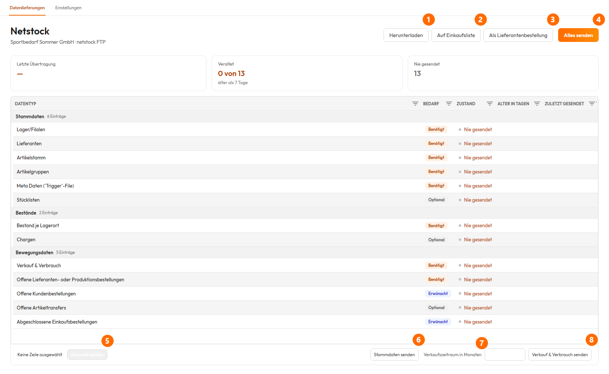
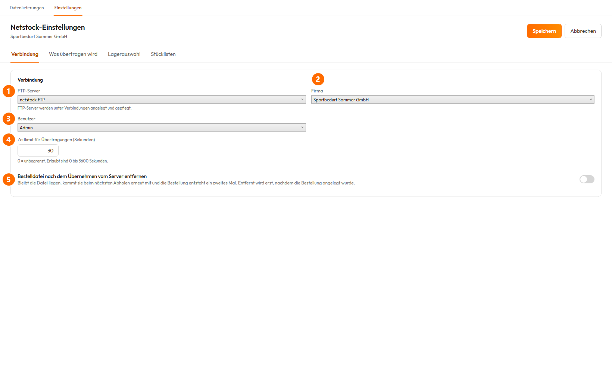
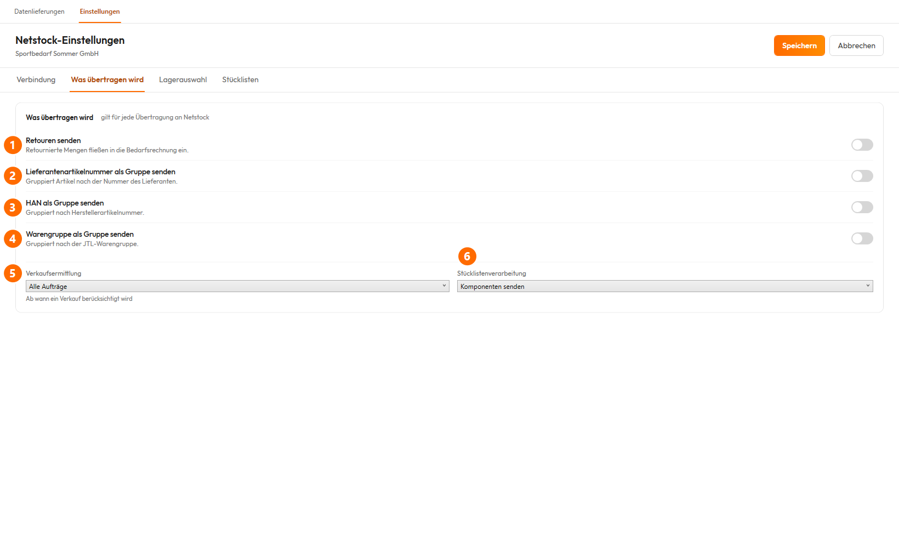
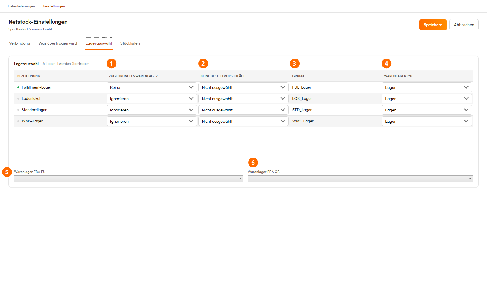
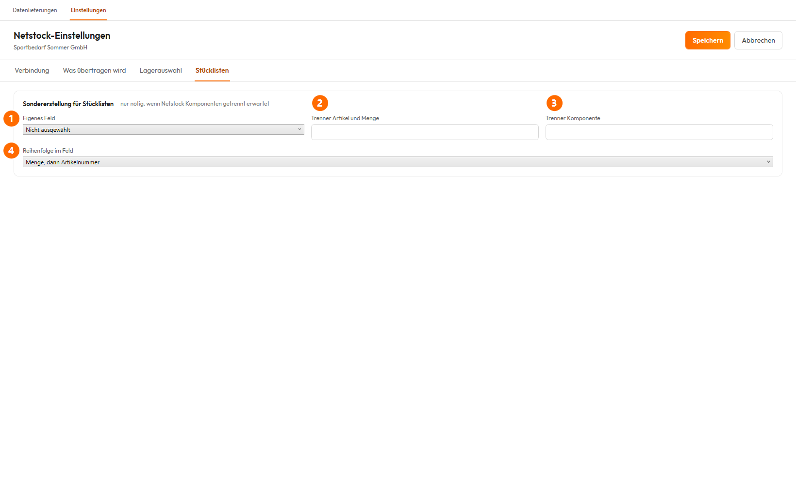

Netstock
Netstock
Auf dieser Seite
- Einleitung
- Voraussetzungen
- Daten senden
- Kennzahlen
- Die Tabelle der Datenpakete
- Der Lieferant „Setartikel"
- Senden
- Verkaufszeitraum
- Daten empfangen
- Bestellvorschläge zeitgesteuert übernehmen
- Wenn dieselbe Bestellung zweimal ankommt
- Einstellungen
- Verbindung
- Was übertragen wird
- Lagerauswahl
- Stücklisten
- Automatisierung über Jobby
- Job auf Wunsch automatisch anlegen lassen
- Bitte prüfen: Die angelegten Jobs sind Beispiele
Einleitung
Netstock ist eine App im arpaTools Client und verbindet Ihre JTL-Wawi mit dem externen Bestandsplanungssystem Netstock. Netstock berechnet auf Basis Ihrer Artikel-, Bestands- und Verkaufsdaten Bedarfs- und Bestellvorschläge. arpaTools übernimmt dabei den Datenaustausch in beide Richtungen:
- Senden: arpaTools exportiert Artikel-, Bestands-, Verkaufs- und weitere Daten aus JTL-Wawi und lädt sie per FTP zu Netstock hoch.
- Empfangen: arpaTools lädt die von Netstock berechneten Bestellvorschläge per FTP herunter und übernimmt sie wahlweise in die JTL-Einkaufsliste oder direkt als Lieferantenbestellung.
Der Datenaustausch lässt sich manuell in der Netstock-Ansicht anstoßen oder automatisiert über Jobby (siehe Automatisierung über Jobby). Für regelmäßige Abläufe empfehlen wir Jobby. Die Ansicht hat zwei Reiter: Datenlieferungen mit der Tabelle und den Schaltflächen zum Senden und Empfangen, und Einstellungen.

① Herunterladen: holt die Bestellvorschläge von Netstock und legt die Datei in einem Ordner ab. ② Auf Einkaufsliste: übernimmt die Bestellvorschläge in die JTL-Einkaufsliste. ③ Als Lieferantenbestellung: legt aus den Bestellvorschlägen Lieferantenbestellungen an. ④ Alles senden: überträgt sämtliche Datenpakete der Tabelle. ⑤ Auswahl senden: überträgt nur die markierten Zeilen. Die Schaltfläche wird aktiv, sobald Sie mindestens eine Zeile markiert haben. ⑥ Stammdaten senden: Schnellzugriff für die Grunddaten, die Netstock zuerst braucht. ⑦ Verkaufszeitraum in Monaten: wie weit die übertragenen Verkäufe zurückreichen. ⑧ Verkauf & Verbrauch senden: Schnellzugriff für Verkäufe und Bestände.
Die einzelnen Punkte sind in den folgenden Abschnitten beschrieben.
Voraussetzungen
Bevor die ersten Daten zu Netstock gehen, braucht es ein paar Dinge. Die ersten beiden klären Sie mit Netstock, die übrigen richten Sie in arpaTools ein. Gehen Sie die Liste am besten der Reihe nach durch, dann greift ein Schritt in den nächsten.
Bei Netstock
- Ein eigenes Netstock-Abonnement bei Netstock. arpaTools ist die Schnittstelle und liefert die Daten, gerechnet und geplant wird bei Netstock selbst. Dafür brauchen Sie ein aktives Abonnement direkt bei Netstock. Unsere arpaTools-Lizenz für das Modul Netstock ersetzt es nicht, Sie brauchen beides. Informationen und Kontakt finden Sie auf der Website von Netstock: www.netstock.com/de.
- FTP-Zugangsdaten von Netstock. Über diesen Zugang tauschen arpaTools und Netstock die Dateien aus. Die Zugangsdaten bekommen Sie von Netstock. Für arpaTools brauchen Sie daraus den Server, den Port, den Benutzernamen, das Passwort und die Angabe, ob FTP oder SFTP verwendet wird. Fehlt Ihnen davon etwas, fragen Sie bei Netstock am besten gleich nach.
In arpaTools
- Den FTP-Zugang anlegen. Tragen Sie die Zugangsdaten von Netstock einmal unter Verbindungen ein. Wie das geht, steht Schritt für Schritt unter FTP-Zugang anlegen. Testen Sie den Zugang dort gleich mit Prüfen, dann wissen Sie sicher, dass die Verbindung steht.
- Den Zugang mit Netstock verknüpfen. Ein angelegter Zugang allein reicht noch nicht: Erst in den Netstock-Einstellungen legen Sie fest, dass Netstock genau diesen Zugang verwendet. Wählen Sie auf der Registerkarte Verbindung unter FTP-Server den eben angelegten Zugang aus, dazu Firma und Benutzer. Auf der Registerkarte Lagerauswahl stellen Sie mindestens ein Lager auf etwas anderes als Ignorieren, denn ohne Lager hätte Netstock keinen Bestand zum Rechnen. Danach Speichern.
- Eine gültige arpaTools-Lizenz für das Modul Netstock. Sie schaltet die Schnittstelle in arpaTools frei und kommt von uns, zusätzlich zu Ihrem Abonnement bei Netstock (siehe Punkt 1).
Solange FTP-Server, Firma oder Benutzer fehlen, zeigt Datenlieferungen den Hinweis „Netstock ist noch nicht eingerichtet. Hinterlegen Sie in den Moduleinstellungen einen FTP-Server, eine Firma und einen Benutzer.", und alle Schaltflächen zum Senden und Empfangen bleiben inaktiv. Ist alles eingerichtet, stehen unter der Überschrift die gewählte Firma und der FTP-Server.
Danach empfehlen wir, jeden Weg, den Sie nutzen möchten, einmal in der Netstock-Ansicht von Hand auszuprobieren. arpaTools bietet Ihnen anschließend an, daraus einen Job anzulegen (siehe Job auf Wunsch automatisch anlegen lassen).
Daten senden
Kennzahlen
Über der Tabelle stehen drei Kennzahlen:
- Letzte Übertragung: wie lange die jüngste Übertragung zurückliegt, darunter Datum und Uhrzeit.
- Veraltet: wie viele Datenpakete älter als 7 Tage sind, gemessen an allen Paketen der Tabelle.
- Nie gesendet: wie viele Datenpakete noch nie übertragen wurden.
Die Tabelle der Datenpakete
Die Tabelle listet alle Datenpakete, gruppiert nach Stammdaten, Bestände und Bewegungsdaten. Je Paket zeigt sie:
- Bedarf: wie dringend Netstock das Paket braucht. Benötigt heißt, ohne das Paket kann Netstock nicht rechnen. Erwünscht heißt, Netstock rechnet damit genauer. Optional betrifft Daten, die nicht jede Installation hat.
- Zustand: Aktuell, Veraltet (älter als 7 Tage) oder Nie gesendet.
- Alter in Tagen und Zuletzt gesendet mit Datum und Uhrzeit.
Über das Filtersymbol im Spaltenkopf grenzen Sie die Tabelle ein, etwa auf alle veralteten Pakete.
| Gruppe | Datenpaket | Bedarf | Beschreibung |
|---|---|---|---|
| Stammdaten | Lager/Filialen | Benötigt | Stammdaten Ihrer Lager. |
| Stammdaten | Lieferanten | Benötigt | Ihre Lieferantenstammdaten, dazu der Sammeleintrag Setartikel. |
| Stammdaten | Artikelstamm | Benötigt | Artikel-Stammdaten. |
| Stammdaten | Artikelgruppen | Benötigt | Ihre Warengruppen. |
| Stammdaten | Meta Daten ('Trigger'-File) | Benötigt | Steuerdatei, die Netstock signalisiert, dass ein Übertragungslauf abgeschlossen ist. Ist sie dabei, geht sie immer als letzte Datei hinaus. |
| Stammdaten | Stücklisten | Optional | Stücklisteninformationen. |
| Bestände | Bestand je Lagerort | Benötigt | Aktueller Lagerbestand, aufgeschlüsselt je Lager. |
| Bestände | Chargen | Optional | Chargeninformationen. |
| Bewegungsdaten | Verkauf & Verbrauch | Benötigt | Verkaufs- und Verbrauchsdaten als Grundlage der Bedarfsplanung. |
| Bewegungsdaten | Offene Lieferanten- oder Produktionsbestellungen | Benötigt | Noch nicht abgeschlossene Bestellungen. |
| Bewegungsdaten | Offene Kundenbestellungen | Erwünscht | Noch nicht abgeschlossene Kundenaufträge. |
| Bewegungsdaten | Offene Artikeltransfers | Optional | Umlagerungen zwischen Lagern, die noch nicht abgeschlossen sind. |
| Bewegungsdaten | Abgeschlossene Einkaufsbestellungen | Erwünscht | Historische Einkaufsbestellungen. |
Der Lieferant „Setartikel"
Stücklistenartikel haben in JTL-Wawi keinen Lieferanten. Damit sie sich in Netstock trotzdem auswerten lassen, sendet arpaTools sie gesammelt unter dem Lieferanten Setartikel mit. Artikel, die keine Stückliste sind und für die kein Standardlieferant hinterlegt ist, werden diesem Lieferanten nicht zugeordnet und erscheinen in Netstock ohne Lieferantenstammsatz.
Senden
Sie haben vier Wege, Daten zu übertragen:
- Auswahl senden ⑤ überträgt genau die Zeilen, die Sie in der Tabelle markiert haben. Mehrere Zeilen markieren Sie mit gedrückter Strg- oder Umschalttaste.
- Stammdaten senden ⑥ überträgt Lager/Filialen, Lieferanten, Artikelstamm und Meta Daten. Artikelgruppen und Stücklisten gehören nicht dazu, obwohl sie in der Gruppe Stammdaten stehen.
- Verkauf & Verbrauch senden ⑧ überträgt Verkauf & Verbrauch, Bestand je Lagerort und Meta Daten.
- Alles senden ④ überträgt alle 13 Datenpakete.
Nach dem Senden liest die Ansicht die Tabelle neu ein, Zustand und Zeitpunkt zeigen also sofort, was gerade übertragen wurde.
Verkaufszeitraum
Das Feld Verkaufszeitraum in Monaten ⑦ legt fest, wie weit die übertragenen Verkäufe zurückreichen. Es gilt nur für Verkauf & Verbrauch senden. Erlaubt sind 1 bis 60 Monate. Bleibt das Feld leer, sendet arpaTools den Standardzeitraum von 2 Monaten, ebenso bei allen anderen Wegen.
Gezählt wird ab dem Ersten des laufenden Monats: Der Wert 2 überträgt die beiden abgeschlossenen Vormonate und den laufenden Monat. Maßgeblich ist dabei das Rechnungs- beziehungsweise Versanddatum, nicht das Datum der Auftragserfassung, denn genau danach ordnet Netstock die Mengen den Monaten zu. Ein Auftrag, der im Januar erfasst und im März ausgeliefert wurde, zählt also zum März.
Daten empfangen
Oben rechts in Datenlieferungen stehen drei Schaltflächen für die von Netstock berechneten Bestellvorschläge:
- Herunterladen ①: arpaTools fragt nach einem Zielordner und legt die Datei dort ab, ohne sie weiter zu verarbeiten.
- Auf Einkaufsliste ②: importiert die Bestellvorschläge direkt in die JTL-Einkaufsliste.
- Als Lieferantenbestellung ③: importiert die Bestellvorschläge über JTL-Ameise direkt als Lieferantenbestellung.
Bestellvorschläge zeitgesteuert übernehmen
Alle drei Wege lassen sich als Job einrichten, damit sie ohne Zutun laufen. Nach einem erfolgreichen Lauf über die Schaltfläche bietet arpaTools an, den passenden Job selbst anzulegen (siehe Job auf Wunsch automatisch anlegen lassen).
Von Hand fügen Sie für den Weg Als Lieferantenbestellung in Jobby die Aktion Netstock: Lieferantenbestellung hinzu. Sie holt die Bestellvorschläge selbst ab und legt sie an. Einzustellen ist nichts, denn Zugang und Zuordnung stehen in den Netstock-Einstellungen.
Für diesen Weg ist die eigene Aktion nötig. Netstock schreibt Lieferant und Lager als Schlüssel in die Datei, nicht als Namen. Wer die Datei stattdessen über eine allgemeine Ameise-Vorlage einliest, bekommt dort keine Zuordnung zustande.
Wenn dieselbe Bestellung zweimal ankommt
Eine abgeholte Datei bleibt auf dem Server liegen und kommt beim nächsten Abholen erneut mit. Wer zweimal übernimmt, hat die Bestellung zweimal in der Wawi.
Dagegen gibt es in den Netstock-Einstellungen auf der Registerkarte Verbindung den Schalter Bestelldatei nach dem Übernehmen vom Server entfernen. Er ist zunächst aus, damit sich am gewohnten Verhalten nichts ändert.
Eingeschaltet wird die Datei entfernt, sobald die Einkaufsliste oder die Lieferantenbestellung geschrieben ist. Sie bleibt liegen, wenn dabei etwas schiefgeht, und auch dann, wenn die Datei keine verwertbare Zeile enthielt. Sonst wäre die Bestellung weg, ohne dass etwas in der Wawi angekommen ist.
Beim reinen Herunterladen greift der Schalter nicht: Dort ist die abgelegte Datei das Ergebnis, und sie soll nicht verschwinden.
Der Schalter wirkt für die Schaltflächen Auf Einkaufsliste und Als Lieferantenbestellung und für die Jobby-Aktion Netstock: Lieferantenbestellung. Für einen Job aus Download von FTP-Server und Einkaufsliste schreiben gilt er nicht; dort entscheidet die Download-Aktion, ob die Datei auf dem Server bleibt (siehe Bitte prüfen: Die angelegten Jobs sind Beispiele).
Einstellungen
Die Netstock-Einstellungen öffnen Sie über den Reiter Einstellungen oben in der Ansicht. Sie gliedern sich in vier Registerkarten: Verbindung, Was übertragen wird, Lagerauswahl und Stücklisten. Änderungen auf allen vier Registerkarten übernimmt erst Speichern. Abbrechen verwirft sie und zeigt wieder den gespeicherten Stand.
Verbindung

① FTP-Server: der Zugang zu Netstock, also die Verknüpfung zwischen Netstock und dem FTP-Zugang, den Sie unter Verbindungen angelegt haben. Die Liste zeigt alle dort angelegten Zugänge. Fehlt Ihr Netstock-Zugang, legen Sie ihn zuerst an (siehe FTP-Zugang anlegen) und öffnen die Einstellungen danach erneut. ② Firma: die Firma, zu der die Lieferantenbestellungen angelegt werden. ③ Benutzer: der Wawi-Benutzer, der in den von arpaTools angelegten Daten eingetragen wird. ④ Zeitlimit für Übertragungen (Sekunden): wie lange arpaTools auf die Antwort einer einzelnen Übertragungsabfrage wartet, bevor sie abgebrochen wird. Erlaubt sind Werte von 0 bis 3600 Sekunden, Vorgabe ist 90. 0 bedeutet unbegrenzt. Erhöhen Sie den Wert, wenn Übertragungen bei großen Datenmengen mit einer Zeitüberschreitung abbrechen. Wer den Wert nie verändert hat, wird beim Update von den früheren 30 Sekunden auf die 90 gehoben; ein selbst eingetragener Wert bleibt stehen. ⑤ Bestelldatei nach dem Übernehmen vom Server entfernen: verhindert, dass dieselbe Bestellung zweimal angelegt wird (siehe Wenn dieselbe Bestellung zweimal ankommt).
Was übertragen wird
Diese Einstellungen gelten für jede Übertragung an Netstock.

① Retouren senden: retournierte Mengen fließen in die Bedarfsrechnung ein. ② Lieferantenartikelnummer als Gruppe senden: gruppiert Artikel nach der Nummer des Lieferanten. ③ HAN als Gruppe senden: gruppiert nach der Herstellerartikelnummer. ④ Warengruppe als Gruppe senden: gruppiert nach der JTL-Warengruppe. ⑤ Verkaufsermittlung: ab wann ein Auftrag als Verkauf zählt.
- Alle Aufträge: jeder Auftrag.
- Bezahlte Aufträge: nur bezahlte Aufträge, dazu Aufträge mit einer Zahlungsart, die das Ausliefern vor der Zahlung erlaubt.
- Gelieferte Aufträge: nur ausgelieferte Aufträge.
⑥ Stücklistenverarbeitung: wie ein verkaufter Stücklistenartikel in die Verkaufsdaten eingeht.
- Komponenten senden: der Verkauf zählt für die einzelnen Bestandteile.
- Stücklistenvater senden: der Verkauf zählt für den Stücklistenartikel selbst.
Lagerauswahl
Hier legen Sie je Lager fest, ob und wie es an Netstock geht. Die Zeile über der Tabelle zeigt, wie viele Lager es gibt und wie viele davon übertragen werden. Ein grüner Punkt vor dem Namen markiert ein Lager, das übertragen wird.

① Zugeordnetes Warenlager: was mit dem Lager geschieht.
- Ignorieren: das Lager wird nicht übertragen. Das ist die Vorgabe für jedes Lager, das Sie hier noch nicht eingestellt haben.
- Keine: das Lager geht als eigenes Lager an Netstock.
- Ein anderes Lager: Bestände, Chargen, Verkäufe, Bestellungen und Umlagerungen dieses Lagers werden dem gewählten Lager zugerechnet und dort zusammengefasst.
② Keine Bestellvorschläge: ein Eigenes Feld aus der Feldgruppe Netstock in JTL-Wawi. Artikel, bei denen dieses Feld angehakt ist, meldet arpaTools für dieses Lager als nicht zu bestellen. Mit Nicht ausgewählt gilt keine solche Einschränkung. ③ Gruppe: der Gruppenname, unter dem Netstock das Lager führt. Vorbelegt ist das Kürzel des Lagers aus der Wawi. ④ Warenlagertyp: Laden/Filiale, Lager (Vorgabe) oder Zentrallager. ⑤ Warenlager FBA EU und ⑥ Warenlager FBA GB: die Lager, denen Verkäufe über Amazon FBA zugerechnet werden. Nach Großbritannien versandte FBA-Verkäufe zählen für das Lager FBA GB, alle übrigen für das Lager FBA EU. Zur Auswahl stehen nur FBA-Lager. FBA-Verkäufe werden nur übertragen, wenn ein Warenlager FBA EU gewählt ist.
Stücklisten

Diese Registerkarte brauchen Sie nur für eine Sondererstellung, wenn Netstock die Komponenten einer Stückliste getrennt erwartet.
① Eigenes Feld: das Artikel-Feld, aus dem Komponenten und Mengen gelesen werden.
② Trenner Artikel und Menge: das Zeichen zwischen Artikelnummer und Menge.
③ Trenner Komponente: das Zeichen zwischen zwei Komponenten.
④ Reihenfolge im Feld: welcher der beiden Werte zuerst steht. Bei 10;MSU12002 steht die Menge
vorn (Menge, dann Artikelnummer), bei MSU12002;10 die Artikelnummer (Artikelnummer, dann
Menge). Passt die Einstellung nicht zu Ihren gepflegten Werten, kommen falsche Mengen bei Netstock an
oder der Artikel wird übersprungen.
Hinweis: Wer die Sondererstellung schon vor dem Update genutzt hat, findet die Einstellung danach auf Menge, dann Artikelnummer. Pflegen Sie Ihr Feld andersherum, stellen Sie einmalig um.
Einträge, die nicht gelesen werden können, halten den Versand nicht auf. Steht mitten im Feld ein
Trenner zu viel, fehlt eine Menge, steht dort statt einer Menge etwas anderes, oder gibt es eine der
genannten Artikelnummern in der Wawi nicht, wird dieser Artikel samt allen seinen Komponenten
übersprungen; die übrigen Stücklisten gehen normal an Netstock. Ein Trenner am Ende (10;MSU12002|)
ist dagegen unschädlich und wird einfach überlesen. Groß- und Kleinschreibung der Artikelnummer spielt
keine Rolle. Jeder übersprungene Artikel steht mit Artikelnummer, Komponente und Feldinhalt im
Anwendungsprotokoll, sodass Sie die betroffenen Stellen gezielt nacharbeiten können.
Automatisierung über Jobby
Für einen regelmäßigen, automatischen Datenaustausch richten Sie in Jobby einen Job ein. Die Jobs laufen zeitgesteuert über den arpaTools Worker. Details zu den Aktionen und zu den Grundlagen von Jobby stehen in der Jobby-Dokumentation.
| Zweck | Aktionen im Job |
|---|---|
| Daten an Netstock senden | Netstock |
| Bestellvorschläge als Lieferantenbestellung übernehmen | Netstock: Lieferantenbestellung |
| Bestellvorschläge auf die Einkaufsliste übernehmen | Download von FTP-Server, dann Einkaufsliste schreiben |
| Bestellvorschläge nur in einem Ordner ablegen | Download von FTP-Server, dann Daten in Verzeichnis speichern |
Job auf Wunsch automatisch anlegen lassen
Sie müssen diese Jobs nicht von Hand erstellen. Am einfachsten geht es so: Probieren Sie den gewünschten Weg zuerst einmal in der Netstock-Ansicht aus, zum Beispiel mit Alles senden oder mit Auf Einkaufsliste. War der Lauf erfolgreich, fragt arpaTools im Fenster „Interaktion notwendig":
Die Aktion können Sie mit Jobby auch automatisieren? Soll ein Beispieljob angelegt werden?
Mit Ja legt arpaTools den passenden Job in Jobby an, je nach Schaltfläche einen dieser Jobs:
| Schaltfläche | Angelegter Job | Aktionen |
|---|---|---|
| eine der vier Senden-Schaltflächen | Netstock Upload-Job (automatisch angelegt) | Netstock |
| Herunterladen | Netstock Download-Job (automatisch angelegt) | Download von FTP-Server, dann Daten in Verzeichnis speichern in den gewählten Ordner |
| Auf Einkaufsliste | Netstock Einkaufsliste-Job (automatisch angelegt) | Download von FTP-Server, dann Einkaufsliste schreiben |
| Als Lieferantenbestellung | Netstock Lieferantenbestellung-Job (automatisch angelegt) | Netstock: Lieferantenbestellung |
Eine Bestätigung erscheint danach nicht. Den neuen Job finden Sie in Jobby unter Jobs, erkennbar am Zusatz „(automatisch angelegt)" im Namen.
Gibt es den passenden Job schon, fragt arpaTools nicht erneut. Nach einem fehlgeschlagenen Lauf fragt es ebenfalls nicht.
Mit Nicht erneut fragen im Fragefenster blenden Sie die Frage dauerhaft aus. Das gilt getrennt für das Senden und für das Abholen, beim Abholen aber für alle drei Schaltflächen gemeinsam.
Bitte prüfen: Die angelegten Jobs sind Beispiele
Ein Job, den arpaTools auf diese Weise anlegt, ist ein Beispiel. Er ist ein guter Startpunkt, aber noch nicht Ihr fertiger Ablauf: Er bildet den Weg in seiner einfachsten Form ab und kennt die Besonderheiten Ihres Betriebs nicht. Es ist deshalb nicht sichergestellt, dass er von Anfang an genau so läuft, wie Sie es brauchen.
Nehmen Sie sich nach dem Anlegen bitte ein paar Minuten Zeit:
- Ansehen: Öffnen Sie den Job in Jobby und gehen Sie seine Aktionen durch. Worauf es je Job ankommt, steht in der Liste unten.
- Anpassen: Stellen Sie Aktionen und Zeitplan auf Ihre Bedürfnisse ein.
- Einmal zur Probe ausführen: Starten Sie den Job in Jobby mit Starten und sehen Sie sich das Ergebnis an, im Verlauf und dort, wo die Daten ankommen sollen: bei Netstock, auf der Einkaufsliste oder bei den Lieferantenbestellungen.
Diesen Probelauf empfehlen wir jedem Kunden einmal, auch wenn der Lauf über die Schaltfläche geklappt hat. Der Job arbeitet mit eigenen Einstellungen, nicht mit denen der Schaltfläche.
Gut zu wissen: Der Job ist gleich nach dem Anlegen aktiv und auf einen täglichen Lauf in der Nacht eingestellt. Ist der arpaTools Worker eingerichtet, folgt der erste Lauf meist schon kurz nach dem Anlegen. Sehen Sie sich den Job deshalb am besten direkt im Anschluss an.
Upload-, Einkaufsliste- und Download-Job übernehmen den FTP-Zugang beim Anlegen fest aus den Netstock-Einstellungen. Wählen Sie dort später einen anderen Zugang, stellen Sie ihn auch in den Aktionen dieser Jobs um.
Worauf es je Job ankommt:
- Netstock Upload-Job: Er bringt eigene, feste Einstellungen mit. Was Sie auf den Registerkarten Lagerauswahl und Was übertragen wird eingestellt haben, gilt für ihn nicht; nur die Felder Warenlager FBA EU und Warenlager FBA GB übernimmt er. Er überträgt nur das erste Lager Ihrer Wawi, die Verkäufe der letzten zwei Monate samt laufendem Monat und nur einen Teil der Datenpakete: Chargen, offene Kundenbestellungen, offene Artikeltransfers und abgeschlossene Einkaufsbestellungen fehlen. Stücklisten gehen mit dem Artikelstamm mit, sobald Ihre Wawi aktive Stücklisten hat, und folgen dabei der Registerkarte Stücklisten. Dazu stehen Retouren auf aus, die Verkaufsermittlung auf Alle Aufträge, die Stücklistenverarbeitung auf Komponenten senden und alle Gruppierungen auf aus. Öffnen Sie im Job die Aktion Netstock und stellen Sie Datenpakete, Lager und Optionen so ein, wie Sie es für Netstock brauchen.
- Netstock Einkaufsliste-Job: Hier sind zwei Punkte besonders wichtig.
- Aufbau der Datei: Die Aktion Einkaufsliste schreiben muss zum Aufbau der Datei von Netstock passen. Die Schaltfläche Auf Einkaufsliste liest sie so: Startzeile 2, denn die erste Zeile ist eine Kopfzeile, Identifizierungsart Artikelnummer, Identifizierung Spalte 7 und Menge Spalte 9. Vergleichen Sie diese Werte mit der Aktion im Job und tragen Sie sie dort ein, wo sie abweichen.
- Doppelte Einträge: Die Aktion Download von FTP-Server lässt die Dateien auf dem Server liegen, und der Schalter Bestelldatei nach dem Übernehmen vom Server entfernen gilt für diesen Job nicht. Jeder Lauf liest deshalb alle Bestelldateien, die noch auf dem Server liegen, und trägt sie erneut in die Einkaufsliste ein. Legen Sie in der Download-Aktion unter Verarbeitung fest, dass die Dateien nach dem Download gelöscht werden, oder sorgen Sie auf andere Weise dafür, dass jede Datei nur einmal übernommen wird. Beachten Sie beim Löschen: Die Datei ist dann schon vom Server entfernt, bevor die Einkaufsliste geschrieben ist.
- Netstock Download-Job: Er legt die Dateien in dem Ordner ab, den Sie beim Herunterladen gewählt haben, und überschreibt dort Dateien gleichen Namens. Auch hier bleiben die Dateien auf dem Server, jeder Lauf holt sie also erneut. Prüfen Sie, ob Ordner und Verhalten zu Ihrem Ablauf passen.
- Netstock Lieferantenbestellung-Job: Er nutzt Zugang, Firma und Benutzer aus den Netstock-Einstellungen. Prüfen Sie gleich nach dem Anlegen den Schalter Bestelldatei nach dem Übernehmen vom Server entfernen. Ist er aus, legt der Job bei jedem Lauf auch die Bestellungen erneut an, deren Datei noch auf dem Server liegt, beim ersten Lauf also womöglich genau die, die Sie eben von Hand übernommen haben (siehe Wenn dieselbe Bestellung zweimal ankommt).